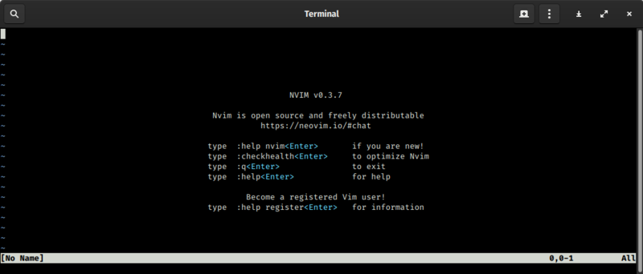

This is a webpage that discusses the history of Vim, and its customization ability.
Background Definitions
VIM: This is stands for Vi Improved that was originally a clone of the Vi text editor made by Bill Joy for Unix.
Facts About VIM
Released by Bram Moolenaar in 1991.
Originally based on the Stevie text editor for the Atari ST computer, which was created by Tim Thompson, Tony Andrews, and G.R. (Fred) Walter.
Vim is customizable with macros to automate keystrokes or call user-defined functions, and be customized via scripting in Lua, Perl, Python, Racket, Ruby, and Tcl programming languages.

Neovim: A project which aims to improve Vim, and has been around since December 2015.
Neovim: List Of Improvements Over Vim
Aims to improve extensibility and maintainability of Vim.
Shares the same config file as Vim.
Offers better scripting, plugins, and integration with modern GUIs.